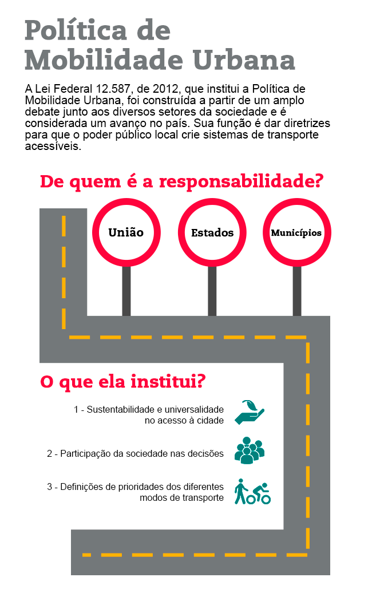
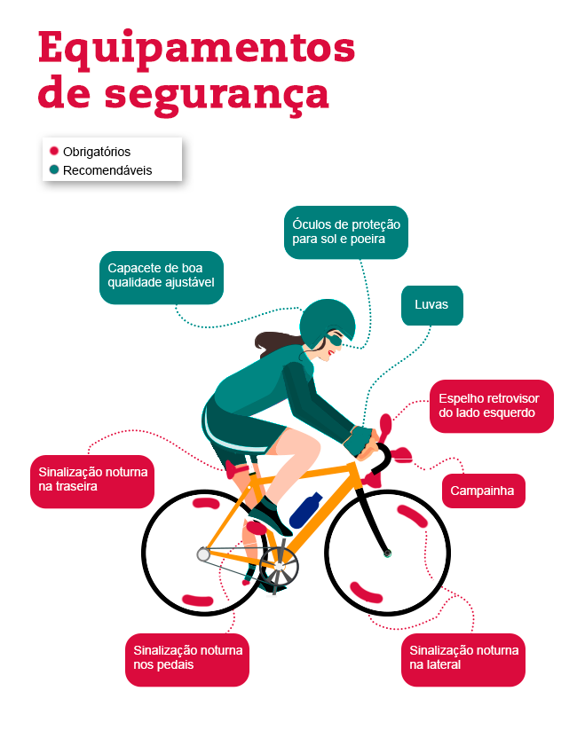
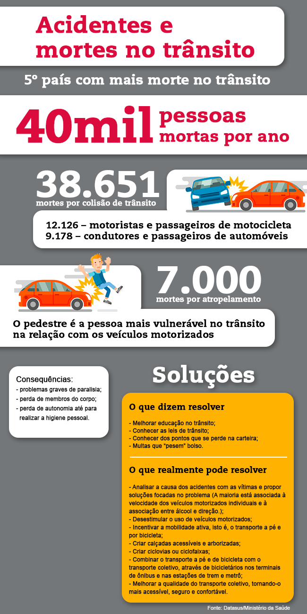
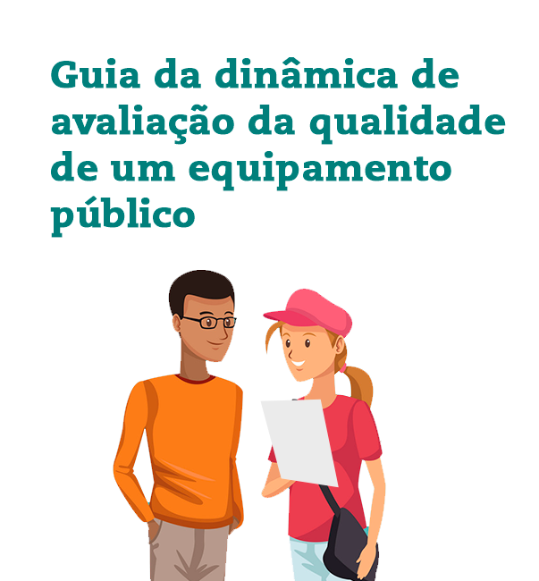
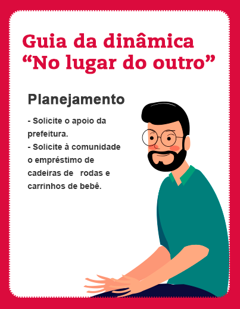

Academia ao ar livre.

Roda de capoeira no Parque da Redenção, em Porto Alegre (RS).

Clique nos itens abaixo para visualizar os módulos.
A convivência entre as pessoas e o acesso aos bens e serviços que estão disponíveis nas cidades dependem das condições básicas que compõem o que chamamos de mobilidade urbana. Nesse sentido, pensar sobre a mobilidade urbana significa refletir sobre as relações das pessoas com a cidade e com o território nas suas diferentes formas de ocupação. Envolve a compreensão do funcionamento dos modos de transporte que são utilizados, mas também como se dá a relação das pessoas com as funções exercidas na cidade.
É importante relembrar que nos últimos 50 anos o Brasil passou por transformações que alteraram, significativamente, a maneira pela qual as populações vivenciam o território, em um processo crescente de urbanização que, atualmente, alcança cerca de 85% da população do país.
Essa rede complexa e diversificada de municípios e cidades, embora apresente características culturais, econômicas, sociais, ambientais e territoriais singulares, convive com um processo crescente de urbanização que está baseado na difusão do uso de veículos motorizados como principal meio de transporte, incluindo carros, ônibus, motos e embarcações fluviais que também utilizam como combustível o óleo diesel ou a gasolina.

Aperte o play e escute mais sobre urbanização intensificada.
A qualidade da mobilidade urbana mantém, portanto, uma relação direta com o planejamento da cidade. Garantir sistemas de mobilidade urbana, seguros e acessíveis, colocando o foco no bem-estar das pessoas, é uma visão estratégica do futuro das cidades.

A mobilidade urbana é essencial para a vida cotidiana das pessoas que moram nas cidades, mas também para moradores de vilas e localidades rurais e ribeirinhas que, de alguma maneira, vivenciam ou sentem os efeitos da intensidade do processo de urbanização do território brasileiro, sobretudo a partir do século XX. Nesse sentido, a mobilidade urbana tem um significado universal, válido tanto para as cidades, como para as vilas das áreas rurais, quando estas são impactadas pelo asfaltamento e pelos meios motorizados de locomoção.

 Há desigualdades sociais que são, em primeiro lugar, desigualdades territoriais, porque derivam do lugar onde cada qual se encontra. Seu tratamento não pode ser alheio às realidades territoriais. O cidadão é o indivíduo num lugar. A República somente será realmente democrática quando considerar todos os cidadãos como iguais, independentemente do lugar onde estejam.” (Milton Santos, 2007 p-151)
Há desigualdades sociais que são, em primeiro lugar, desigualdades territoriais, porque derivam do lugar onde cada qual se encontra. Seu tratamento não pode ser alheio às realidades territoriais. O cidadão é o indivíduo num lugar. A República somente será realmente democrática quando considerar todos os cidadãos como iguais, independentemente do lugar onde estejam.” (Milton Santos, 2007 p-151)
Aperte o play e escute mais sobre mobilidade urbana.
O que ocorre nas grandes cidades atualmente pode servir como ponto de inflexão para aquelas cidades que ainda estão em processo de urbanização recente. É sabido que o uso de automóveis, pós-revolução industrial, cresceu em números alarmantes, especialmente nos grandes centros urbanos.
Constata-se nas grandes cidades que esse aumento do número de veículos tende a saturar a capacidade das infraestruturas urbanas, numa relação ineficiente entre os sistemas de transportes individual e coletivo.
Para isso, são adotadas medidas que redimensionam os espaços comuns destinados ao fluxo de veículos (coletivos e individuais), bicicletas e pedestres, em ordem de prioridade inversa.
Se a pessoa é foco da mobilidade urbana, a participação cidadã no planejamento e na gestão das cidades passa a ser central.

Além da Lei de Mobilidade Urbana, a maioria das cidades brasileiras incorporaram nos seus calendários três momentos de reflexão que buscam mobilizar a sociedade para a segurança no trânsito: o movimento “Maio Amarelo”, a Semana Nacional de Trânsito e o “Dia Mundial sem Carro”. Clique nas peças de campanha a seguir e saiba mais.
Veja também
Sugestões de leitura
A cidade enquanto lugar privilegiado para o exercício da cidadania é um campo vasto para experimentações e inovações capazes de alterar o padrão de urbanização altamente excludente e segregador que vem se consolidando no Brasil.
Consulte o site do IBGE.
A materialização da cidadania e dos princípios democráticos ocorre no exercício diário, cotidiano. Sabemos que o direito de votar é apenas uma das dimensões do nosso sistema político-democrático e não esgota o exercício da cidadania.
O exercício pleno da cidadania envolve um conjunto de direitos que se expressam e se realizam no território.
De acordo com o Art. 6°, da Constituição Federal, são direitos sociais:
a educação, a saúde, o trabalho, a moradia, o lazer, a segurança, a previdência social, a proteção à maternidade e à infância, a assistência aos desamparados.”
A garantia desses direitos constitucionais dependem muito de como os serviços urbanos e sociais estão distribuídos no território municipal, sejam nas áreas urbanas ou nas áreas rurais.
Em qualquer projeto de formação para a cidadania precisamos conhecer um pouco mais dos nossos alunos e alunas.
Devemos nos perguntar sempre:
Para grande parte dos estudantes da EJA, que vivenciaram de alguma maneira, os efeitos dos processos de exclusão social, seja na infância ou na adolescência, o exercício da cidadania e o direito à educação dependem da inserção desses jovens e adultos na sociedade.
Por isso, quando abordamos as noções de cidadania (incluindo direitos e deveres) no processo educacional devemos refletir junto aos nossos estudantes, acerca das suas percepções e vivências na cidade.
É importante lembrar sempre que esses jovens e adultos são portadores de saberes e conhecimentos construídos a partir de suas experiências no cotidiano. Esses conhecimentos e saberes transmitidos de geração em geração estão na base do nosso sentimento de pertencimento a um lugar, seja na cidade ou no campo.
Morando nas cidades, nas vilas ou localidades rurais, os cidadãos devem ter acesso aos benefícios e recursos produzidos socialmente. No caso específico da EJA, o acesso de jovens e adultos a uma educação que contribua com sua inserção cidadã na sociedade.
Adotar esses valores, sobretudo na EJA, envolve por um lado, a valorização de pessoas, que apesar da baixa escolaridade, são portadoras de saberes, culturas e experiências, e por outro lado, implica no aporte de novos conhecimentos e experiências a partir das suas expectativas e demandas.
É importante refletir como os jovens e os adultos que estão nas escolas usufruem a cidade e os serviços de atendimento ao cidadão, distribuídos no território municipal. Como percebem os seus espaços e manifestam os seus interesses, desejos e ideias?
Os jovens e os adultos que estão inseridos na EJA se sentem seguros, respeitados e valorizados no seu cotidiano?
Com essas respostas podemos trabalhar diferentes percepções sobre a cidade e sobre o território, tornando visível as desigualdades que demarcam fronteiras de acesso ao cidadão, seja em função do local de moradia, da renda familiar, da cor da pele, do gênero ou mesmo da opção sexual de cada indivíduo.
Como será que adolescentes e jovens não-brancos, moradores de favelas se sentem quando são agredidos e confundidos com traficantes pela polícia, por estarem na rua se divertindo?
Será que o sentimento de pertencimento e acolhimento desses jovens que sofrem discriminações cotidianas é igual ao sentimento dos adolescentes de classe média e classe alta, que são bem tratados ou quase nunca abordados como suspeitos pela polícia?
Qual será o sentimento de identidade das pessoas com o seu lugar de moradia, quando esse lugar não conta com serviços básicos indispensáveis a uma boa qualidade de vida?
Consideram que os seus direitos como cidadão estão garantidos? Quais são as suas demandas?
O que os jovens e adultos na EJA pensam sobre a sua qualidade de vida?
Como avaliam o acesso à moradia de qualidade, à saúde, à educação, à cultura e ao lazer?
Nesse sentido, a cidadania, o exercício de direitos e deveres, envolve tanto o entendimento sobre a corresponsabilidade, como o reconhecimento da perspectiva do outro.
O processo de aprendizagem democrático e inclusivo requer espaços favoráveis à troca de experiências, ao diálogo e à compreensão do mundo de maneira crítica e reflexiva. Em vez de entregar respostas prontas e inadequadas aos alunos, desconsiderando as singularidades culturais e as diferentes visões de mundo que podem estar associadas a distinções de poder, desejo e necessidade.
Assim, podemos refletir: como a escola deve atuar para a promoção de diálogos, debates e pesquisas que incorporem os saberes e os conhecimentos produzidos socialmente?
Como estimular que o estudante seja protagonista do processo educativo, em busca de cidades mais humanas e inclusivas, tendo como referência o diálogo e a reflexão crítica sobre o mundo?
Como contribuir para que os jovens e adultos percebam o seu papel na transformação da sociedade por meio da promoção de cidades e territórios mais acolhedores, com respeito às diferenças?
A mobilidade ativa é um conceito, relativamente novo, que parte da valorização da energia humana utilizada como propulsora do movimento e do deslocamento, como andar a pé ou de bicicleta. A ênfase nos meios de transporte não motorizados está no centro desse debate global a partir do qual as pessoas devem ter prioridade sobre os veículos motorizados nas cidades. O velocípede não motorizado, patins, patinetes ou skate também se enquadram no conceito de mobilidade ativa.
A crescente industrialização e urbanização das cidades em escala global alterou consideravelmente a vida das pessoas no mundo.
Paralelamente, houve um aumento exponencial do acesso da população à motorização, fenômeno que impactou o formato das cidades e ampliou a demanda por mais espaço para o fluxo de veículos motorizados individuais.
O resultado é que as pessoas caminham e pedalam cada vez menos e utilizam meios motorizados até mesmo para fazer curtos trajetos. Além disso, grande parte dos trabalhos realizados pelo ser humano não exigem grande gasto de energia física devido à automação e à ampliação das ocupações na área de serviços. O fenômeno do sedentarismo associado ao maior consumo de produtos ricos em carboidratos e gorduras traz como consequência a proliferação de doenças, como obesidade, diabetes, hipertensão arterial e doenças cardiovasculares, até mesmo depressão.
Mas, os impactos nocivos do uso excessivo dos meios motorizados individuais não param por aí: mais poluição sonora e atmosférica, congestionamentos, lesões e mortes no trânsito.
Nesse contexto, mesmo que o caminhar em dois pés esteja na origem do ser humano, foi preciso criar o conceito de mobilidade ativa como forma de resgatar essa dimensão humana básica.
Atualmente, é possível encontrar na internet uma variedade de sites que promovem a reflexão sobre “mobilidade ativa” a partir de estudos e pesquisas que explicitam os efeitos negativos da mobilidade urbana baseada no uso preponderante de veículos motorizados. Clique aqui e conheça mais alguns deles.
Aperte o play e escute o áudio sobre custo
do uso dos veículos motorizados.
A reflexão sobre essas questões associadas, diretamente, ao conceito de mobilidade ativa é uma oportunidade de construir com o aluno uma visão crítica sobre os processos de reprodução das cidades.
A prática da mobilidade ativa é considerada a mais eficiente para curtos deslocamentos, em geral, até cinco quilômetros. Caminhar e andar de bicicleta no dia a dia da vida na cidade é um dos modos mais eficazes de redução de custos na saúde pública.
Investir na qualificação de calçadas e na criação de ciclovias ou ciclofaixas é um estímulo à prática da mobilidade ativa.

- Como a mobilidade urbana se relaciona com a promoção da saúde?
- Quais são os hábitos urbanos podem ser associados à promoção da saúde?
- Como os deslocamentos por meios não motorizados, como andar de bicicleta e caminhar podem contribuir para que as pessoas tenham uma vida saudável?
Veja também
A mobilidade ativa, associada ao planejamento da expansão das cidades, é conceito que tem repercussões sobre os padrões correntes de urbanização que não otimizam recursos necessários ao melhor aproveitamento do uso e ocupação do solo urbano. Conforme Castro (2017), atualmente, uma série de estudos mostram que os modos de vida na cidade influenciam a qualidade de vida e à saúde da população, a exemplo do artigo Urban Sprawl and Risk for Being Overweight or Obese, de Russ Lopez (2004).
A mobilidade urbana é essencial para a democratização do acesso aos espaços abertos e públicos que propiciam a prática de exercícios e das diversas modalidades de esporte (individual ou coletivo) nas cidades.
Em muitas cidades, o poder público e a sociedade tem percebido a importância desses equipamentos para a qualidade de vida com inclusão social. A construção de uma diversidade de tipos de equipamentos ou a utilização do espaço público para diversas demandas, indo além das quadras de futebol. São quadras poliesportivas (futebol, basquete e vôlei), rampa de skate e “academias” ao ar livre, com equipamentos adequados às necessidades de idosos e idosas.
Essas iniciativas que tem caráter inclusivo não param por aí. Registram-se inúmeras experiências promovidas pelo poder público, pela iniciativa privada e pela sociedade, que partem da utilização de praças e parques públicos para a realização de aulas de ginástica, capoeira, tai chi entre outras modalidades de esporte e atividades de cultura voltadas para o lazer da população. O custo dessas atividades realizadas nos espaços públicos é relativamente mais baixo, sobretudo porque não envolvem custos adicionais com aluguel de imóveis privados.
Uma cidade inclusiva, saudável e sustentável nas suas várias dimensões deve disponibilizar aos cidadãos, além dos equipamentos de esporte tradicionais, espaços públicos de uso comum que permitam diferentes possibilidades de uso. Espaços bem cuidados, arborizados e convidativos favorecem sociabilidade, contemplação, leitura de um livro na sombra de uma árvore, brincar, jogar damas ou simplesmente conversar, trocar ideias e experiências.
Muitas cidades já contam inúmeros exemplos de conchas acústicas que permitem a realização de shows musicais e apresentações de teatro e dança ao ar livre.
Algumas escolas também adotaram a prática de abrir suas portas para a realização de atividades nos fins de semana, permitindo maior integração com a comunidade e a utilização dos seus equipamentos de cultura, esporte e lazer. A abertura das escolas para a utilização dos seus equipamentos de esporte e cultura é uma alternativa quando há ausência desses equipamentos em determinados bairros da cidade.
No entanto, sabemos que nem todos os espaços destinados à prática de esporte, cultura e lazer podem estar presentes em todos os bairros de maneira equânime. Os parques e as florestas, a orla das praias e rios, assim como centros culturais e museus de grande porte, são alguns desses exemplos.
Esses espaços e equipamentos singulares que propiciam a realização de atividades físicas e de lazer para estarem acessíveis a todos dependem da qualidade da mobilidade urbana. A promoção da mobilidade ativa, assim como alternativas de transportes coletivos complementares, incluindo rotas de ciclovia ou ciclofaixa são essenciais para democratizar o acesso ao esporte, cultura e lazer nas cidades.
A reflexão crítica do aluno sobre a maneira como estão distribuídos os equipamentos públicos na cidade é importante para compreender como a mobilidade urbana pode garantir o acesso democrático a esses espaços.
- Quais tipos de equipamentos e atividades de esporte, cultura e lazer existem na cidade? Eles satisfazem as diferentes demandas existentes na sociedade?
- Como estão distribuídos nos bairros?
- Quais os bairros mais beneficiados e os menos privilegiados no acesso aos equipamentos de esporte, cultura e lazer?
- Como a melhoria da mobilidade urbana poderia facilitar o acesso aos equipamentos localizados nos diversos bairros da cidade?
- Quais os principais atrativos dos espaços públicos?
Há muito tempo que se preconiza que as cidades devem conter espaços destinados à prática de esporte, cultura e lazer. Essas atividades são fundamentais para o desenvolvimento e o bem-estar físico e psíquico das pessoas em qualquer faixa etária.
O jeito mais antigo do ser humano se locomover é caminhando. Além de não ter custo (ou apenas o custo de reposição do nosso calçado), traz benefícios à saúde, permite a contemplação e o encontro com outras pessoas. Afinal, somos pedestres, tendo ou não um veículo, pois há sempre um momento no qual o motorista é pedestre.
Entretanto, depois da difusão e disseminação do uso de veículos motorizados, a rua deixou de ser um espaço ocupado, prioritariamente, pelas pessoas, pelas charretes ou por bicicletas e passou a ser dominado pelos carros, caminhões e motos. A convivência perigosa entre veículos motorizados e pessoas ampliou a necessidade de se separar o espaço de circulação dos veículos e o espaço de circulação das pessoas com a demarcação da via pública segregada da calçada.
A importância dos carros nas cidades leva a distorções visíveis, é comum encontrarmos vias urbanas asfaltadas com calçadas precárias, estreitas, desniveladas e esburacadas. Às vezes nem calçada existe e as pessoas precisam disputar com os veículos a utilização das vias públicas.
Mas, o desrespeito ao pedestre não para por aí. Além das ruas normalmente terem mais espaços reservados para as vias destinadas ao fluxo de veículos motorizados, é comum observarmos práticas ilegais de ocupação das calçadas para estacionamento irregular de veículos, funcionamento de bares, sinalização e árvores colocados em locais inadequados.


Mas, quem é o pedestre? Além de ser uma pessoa que utiliza a energia humana para o seu deslocamento, o pedestre assume características específicas seguindo as diferenças físicas, sociais e culturais entre as pessoas numa determinada sociedade. São crianças, jovens, adultos e idosos, são homens e mulheres, pessoas com diferente cor de pele, ricos e pobres, pessoas com diferentes deficiências, físicas, auditiva e visual, e pessoas com mobilidade reduzida, como idosos, gestantes, obesos e pessoas com criança de colo.
Essas diferentes características não deveriam ser um obstáculo para que todos pudessem exercer o direito de caminhar na cidade com segurança e autonomia.
Hoje, várias cidades no mundo já estão preparadas para a circulação de pessoas com deficiência física ou visual, com o máximo de autonomia possível. O Brasil avançou bastante ao aprovar leis que reconhecem os direitos das pessoas com deficiência ou com mobilidade reduzida.
Essas orientações visam criar condições de acessibilidade para que uma pessoa com uma cadeira de rodas ou deficiente visual, por exemplo, possa se locomover sozinha; assim como uma pessoa com um carrinho de bebê possa trafegar com facilidade ou uma pessoa idosa não tenha que fazer tanto esforço para passar do nível da calçada para o nível da via. Para isso, conheça algumas iniciativas de acessibilidade nas vias públicas.


- Na sua cidade ou bairro os equipamentos públicos estão adaptados para inclusão das pessoas com deficiência?
- Qual a qualidade das calçadas do seu trajeto cotidiano?
- Em sua maioria são largas, niveladas e adaptadas?
- Você conhece alguém com deficiência ou mobilidade reduzida? Pergunte a elas quais as dificuldades encontradas para se locomover e acessar os lugares e os equipamentos públicos.
O conceito de acessibilidade universal significa:
A possibilidade das pessoas com deficiência ou com mobilidade reduzida acessarem com segurança e autonomia os espaços públicos, as calçadas, as edificações, os equipamentos urbanos, os transportes e as informações e comunicações disponíveis.
Geralmente, quando falamos sobre acessibilidade enfatizamos as diferenças físicas entre as pessoas e os obstáculos urbanos que comprometem a acessibilidade das pessoas com deficiência e com mobilidade reduzida. Mas, além das diferenças físicas podemos observar as barreiras à mobilidade urbana que se constituem por diferenças sociais e culturais de gênero e raça. Barreiras sociais e culturais, em geral, são mais difíceis de transpor porque ficam invisíveis ou ocultas por um discurso e uma escuta pouco sensível aos processos de exclusão social.
São barreiras criadas pela mente humana e fazem parte da construção simbólica da realidade.
A mulher no espaço público, muitas vezes, é constrangida e, por isso, impedida de circular plenamente pela cidade com segurança. Estar sozinha num bar, no cinema ou na praça pode gerar a inconveniência de um assédio. Andar sozinha na rua à noite pode ser perigoso, além da exposição ao risco de assalto ou de um estupro. A maioria das mulheres, infelizmente, tem alguma história de violência urbana para contar, especificamente, associada a sua condição desigual na sociedade.
A “Lei Maria da Penha” dá visibilidade para um conjunto de obstáculos que, historicamente, tem colocado a mulher numa posição subalterna na sociedade, além dos reais riscos de vida que correm pela violência a que estão submetidas no cotidiano.
Não é raro relatos de mulheres que são impedidas de circular plenamente pela cidade por sentirem-se assediadas, molestadas ou ofendidas, quando não são fisicamente agredidas em locais públicos, incluindo transportes coletivos. Registram-se casos de todos os tipos de violência: física, psicológica, sexual, patrimonial e moral. Por esse motivo em muitas cidades do mundo, sobretudo nas grandes cidades, foram incorporados nos sistemas de metrô vagões exclusivos para mulheres em horários de maior movimentação de passageiros.

Outras medidas podem ser adotadas nas cidades para viabilizar a mobilidade segura da mulher. A iluminação pública tem sido apontada pelas mulheres como um dos elementos essenciais para a sua segurança no caminhar pela cidade.
É preciso escutar as mulheres para compreender suas perspectivas, desejos e necessidades. O lugar de fala da mulher na sociedade tem sido restrito e não respeitado. É essencial garantir o lugar de fala das mulheres. Vemos avançar um movimento solidário e compreensivo que busca a promoção da inclusão social da mulher na sociedade em iguais condições de exercício da cidadania.
O preconceito racial e as atitudes homofóbicas também devem ser pensados como barreiras invisíveis à promoção de uma mobilidade urbana segura e inclusiva que garanta o direito à cidade.
Aperte o play e escute o áudio sobre
mobilidade urbana inclusiva.
O combate à violência contra mulheres, negros e homossexuais deve estar entre as prioridades da agenda urbana, incluindo a mobilidade urbana, para que de fato o direito à cidade seja garantido, independente da cor da pele, do sexo, do gênero, da opção sexual ou da classe social.
O que diz a Lei Federal n° 7.716/1989 que define os crimes resultantes de preconceito de raça ou de cor.
Art. 1º Serão punidos, na forma desta Lei, os crimes resultantes de discriminação ou preconceito de raça, cor, etnia, religião ou procedência nacional.
Portanto, qualquer preconceito e discriminação é crime no Brasil e deve ser denunciado e punido na forma da lei.
- Promova o debate com alunos e alunas sobre as situações de discriminação vivenciadas no cotidiano que impedem a circulação plena e segura na cidade.
- Estimule o debate apresentando argumentos sólidos baseados nos direitos garantidos pelas leis brasileiras.
Veja também
A instituição da Lei Federal nº 11.340/2006, mais conhecida como “Lei Maria da Penha” representa um avanço da sociedade brasileira, especialmente, no reconhecimento de um problema generalizado que ameaça, permanentemente, a vida das mulheres no país. A lei cria mecanismos para coibir a violência doméstica e familiar contra a mulher, nos termos do § 8° do art. 226 da Constituição Federal, além de criminalizar todas as formas de discriminação contra as mulheres, adotando os princípios e diretrizes da “Convenção Interamericana para Prevenir, Punir e Erradicar a Violência contra a Mulher”. A lei dispõe também sobre a criação dos “Juizados de Violência Doméstica e Familiar contra a Mulher” e altera o Código de Processo Penal, o Código Penal e a Lei de Execução Penal.
Para abordar mais sobre a violência contra a mulher, sugerimos o filme Precisamos falar do assédio (2016) com duração de 82 minutos e direção de Paula Sacchetta, que foi realizado a partir de depoimentos das mulheres sobre situações de violência enfrentadas em casa e no espaço público. Os depoimentos foram filmados numa van que parou em nove pontos da cidade de São Paulo e do Rio de Janeiro. Mais de 100 mulheres se dispuseram a contar sua história, sendo que 26 foram selecionadas para integrar o filme.
Além deste filme, outras referências podem ser utilizadas na reflexão sobre a violência contra as mulheres no espaço público, onde o assédio, muitas vezes, é confundido e apresentado como elogio ou uma simples “cantada”. O documentário Chega de Fiu-Fiu (2018) de 73 minutos, com direção de Amanda Kamanchek e Fernanda Frazão, narra a história de resistência de três mulheres, que “propõem novas formas de (con)viver no espaço público”. Outra abordagem interessante é a palestra de Juliana de Faria, que fala da campanha “Chega de Fiu-fiu, Cantada não é elogio”, com duração de 16 minutos. Para abordar o preconceito contra homossexuais e transgêneros, sugerimos o videodocumentário de Alice Fornel, “O amor é a cura” de 2018 com duração de 9 minutos.
Desde a disseminação das cidades e da proliferação dos veículos motorizados, o trânsito é um dos fatores que mais causa mortes e provoca lesões e deficiências permanentes no mundo.

Aperte o play e escute o áudio sobre segurança no trânsito.
Uma cidade pode expressar a prioridade ao pedestre e ao ciclista, sem excluir os motoristas, beneficiando a mobilidade urbana de todos. Para isso, deve-se ampliar as condições de caminhar e pedalar, preferencialmente criando pistas segregadas ou separadas de veículos motorizados.
Nas vias em que isso não seja possível, deve-se sinalizar o compartilhamento do carro com a bicicleta e a redução da velocidade.


Portanto, para alcançar a segurança no trânsito é preciso combinar várias ações: educação, fiscalização, punição às infrações, melhoria da sinalização viária e condições de segurança para pedestres e ciclistas com calçadas amplas e acessíveis, ciclovias e ciclofaixas, além da prioridade ao transporte coletivo com faixas exclusivas, rapidez, conforto e segurança.
Acidente? Por que continuamos a chamar de acidente o que pode ser evitado?
Um acidente é uma fatalidade, uma falta de sorte, uma coisa que não temos como controlar. Mas será que podemos dizer que morrem quase 40 mil pessoas no trânsito por ano no Brasil por azar ou destino?
Como sinaliza Eduardo Biavatti, no seu livro “Educar para a segurança nas ruas”: “Quando chamamos uma colisão entre veículos de ‘acidente’, atribuímos uma explicação que pode ser completamente falsa. Nada é menos verdadeiro, entretanto, quando compreendemos que a violência no trânsito é um produto histórico de escolhas políticas que elegeram, desde o final do século XIX, a primazia dos veículos motorizados, de velocidade e de avenidas e estradas, no lugar da proteção da vida humana e da sustentabilidade do planeta”.
 Motocicleta, perigo! Cuidados que os motociclistas devem ter
Motocicleta, perigo! Cuidados que os motociclistas devem terSem dúvida, quando falamos de veículos motorizados, o de maior vulnerabilidade é a motocicleta. Em qualquer batida o para-choque é o corpo e o resultado pode ser fatal. Por isso, deve-se proteger a cabeça com o uso correto do capacete. Batidas em certas áreas do cérebro podem “desligar” determinadas funções que comandam nossa coordenação motora, que nos permitem falar, comer sozinho e ter controle sobre as nossas necessidades de urinar e defecar.
Diante da fragilidade do transporte público na maioria das cidades brasileiras e do custo do automóvel, a motocicleta se tornou uma opção para grande parte da população.
Você sabe como usar o capacete corretamente?
Em função da importância do uso correto do capacete para evitar mortes e lesões permanentes nos motociclistas envolvidos em colisões, a Organização Mundial de Saúde (OMS) elaborou em 2007, o manual “Capacetes”.
A tabela abaixo sintetiza os resultados dos diversos estudos sobre a importância do uso do capacete para evitar mortes e lesões.
| Não usando capacete | Usando capacete |
|---|---|
|
|
Fonte: Organização Mundial de Saúde (OMS), 2007.
Como vimos anteriormente, a diminuição de viagens motorizadas contribui para promoção da segurança no trânsito. Países que incentivaram o uso da bicicleta reduziram os índices de acidentes de trânsito.
- E você, como avalia a segurança no trânsito na sua cidade?
- Você acha que tem muito acidente de trânsito? Você conhece alguém que foi vítima da violência no trânsito?
- Como funciona o transporte coletivo na sua cidade? É eficiente e acessível?
- E pedestres e ciclistas têm segurança e incentivo para caminharem e andarem de bicicleta? A sua cidade dá mais prioridade aos pedestres e ciclistas ou aos motoristas dos veículos individuais motorizados?
- O que você acha que deveria ser feito para promover a segurança no trânsito?
- Como você se classificaria? Mais sedentário ou mais ativo?
A mobilidade urbana é uma dimensão essencial da vida cotidiana nas cidades e de integração do território municipal.
Muitas vezes os alunos que residem nas áreas rurais, especialmente do ensino fundamental, segundo segmento e do ensino médio, precisam se deslocar até o centro da cidade para acessar as escolas ou outros equipamentos de atendimento social. Nesses casos, são utilizados diferentes modos de transporte que variam em função das distâncias entre a casa e a escola.
Esse encontro de pessoas e confluência de diversidades torna a experiência urbana uma oportunidade de enriquecer os repertórios educativos, integrando, de maneira dialética, a vida cotidiana dos alunos aos saberes reproduzidos nas escolas. Portanto, refletir sobre a mobilidade urbana envolve a compreensão de processos complexos que se configuram a partir do deslocamento das pessoas de um lugar ao outro, sendo assim uma oportunidade de aprendizagem para o aluno ampliar a compreensão do seu papel ativo na construção do seu conhecimento e da sua visão de mundo.
Democratizar o acesso à educação, nessa perspectiva, não se restringe ao acesso do aluno à escola, embora esse seja um aspecto importante da relação entre mobilidade urbana e educação. Significa incorporar aos processos de aprendizado as condições para que o aluno seja sujeito ativo da construção do conhecimento.
Nesse sentido, é preciso estabelecer um diálogo que ultrapasse os muros da escola. Num lugar a partir do qual o aluno se veja como agente produtor do conhecimento.

Para isso, apresentaremos recursos didáticos que podem ser utilizados em sala de aula e também orientar atividades de pesquisa e reconhecimento dos espaços da cidade na perspectiva do aluno.
Uma escola comprometida com a promoção da cidadania deve incentivar a reflexão dos estudantes, utilizando dinâmicas que possam gerar empatia entre crianças, idosos, pessoas com deficiência, ricos, pobres, negros, não-brancos e brancos, homens, mulheres, homossexuais, heterossexuais etc.
Como promover esse contato com a diversidade, na perspectiva educacional? Clique nos números abaixo e conheça algumas propostas.
Promover passeios ou incursões de pesquisa na cidade para observar situações que interferem na qualidade de vida, na acessibilidade, na mobilidade ativa, na segurança no trânsito e no acesso à cultura, ao esporte e ao lazer, por exemplo.
Essas incursões de pesquisa no espaço público devem ser planejadas previamente, junto dos estudantes, para traçar um roteiro que permita novos olhares e percepções sobre o espaço público.
Recomenda-se a elaboração de perguntas que possam estimular a pesquisa e a observação dos alunos para práticas cotidianas que estão envolvidas na mobilidade urbana e no deslocamento dos alunos no território.
Construir com os estudantes um roteiro de pesquisa que busque ouvir a opinião das pessoas sobre o espaço público. Essa pesquisa de campo com auxílio de entrevistas deve ser planejada em sala de aula.
A elaboração do questionário pelo aluno com auxílio do professor pode conter questões fechadas (com opções preestabelecidas) ou questões abertas, onde se busca uma avaliação qualitativa sobre determinado assunto. As entrevistas podem ser realizadas individualmente ou em grupo.
O contato dos alunos com especialistas que possuem um conhecimento específico sobre determinado assunto relacionado aos serviços urbanos, sociais ou comunitários pode apoiar a reflexão sobre determinados temas que estão envolvidos no funcionamento das cidades e territórios.
Promover uma mesa de diálogo com profissionais de saúde que trabalham na emergência de um hospital pode ser uma boa estratégia para facilitar o entendimento sobre as consequências dos “acidentes” de trânsito.
A conversa com um engenheiro sanitarista que atua na prestação dos serviços de saneamento básico sobre os problemas gerados pelo descarte irregular de lixo nas vias públicas e nos rios pode também facilitar o entendimento sobre o papel de cada um na manutenção da qualidade do espaço público.
Podemos pensar em vários profissionais que trabalham nos bastidores das cidades e dos territórios, mas que são fundamentais para a qualidade de vida nas cidades.
Quais são os conhecimentos e os saberes envolvidos na manutenção dos espaços de uso comum e na prestação dos serviços públicos das nossas cidades, vilas e localidades rurais?
Além do conhecimento de especialistas, existem pessoas que se destacam pelo seu trabalho social em prol da comunidade ou na promoção da garantia de direitos sociais. Essas lideranças comunitárias podem contribuir no aprofundamento sobre determinados temas e desafios da promoção da cidadania.
Sabem promover a mobilização e a participação da sociedade em torno do bem comum e da inclusão social.
A história de vida dessas lideranças comunitárias, tais como agentes comunitários de saúde, conselheiros municipais, agentes ambientais é farta em conhecimentos e saberes que, tradicionalmente, não estão descritos nos livros didáticos e podem estimular o engajamento e a participação dos alunos em projetos de interesse comum.
Podemos pensar em vários profissionais que trabalham nos bastidores das cidades e dos territórios, mas que são fundamentais para a qualidade de vida nas cidades.
| De que maneira acessamos a cidade? Qual a qualidade da mobilidade urbana para que jovens e adultos usufruam das oportunidades e benefícios da cidade e do território, incluindo vilas e localidades rurais? | Posso acessar os equipamentos urbanos, sociais e comunitários a pé, de bicicleta, de transporte coletivo ou preciso utilizar veículos motorizados individuais? |
|---|---|
| Os temas que integram o conceito de mobilidade urbana estão, diretamente, relacionados a diversas formas de acesso aos bens e serviços oferecidos na cidade e pelas diferentes modalidades de transporte que operam no território, fluxos constantes de pessoas e mercadorias. | O tema da mobilidade urbana também contribui para a construção de um olhar mais amplo sobre o território e a cidade, possibilitando que jovens e adultos façam correlações de vivências entre comunidades, bairros, cidades e território municipal. |
O formato das cidades diz muito sobre a cultura existente em cada lugar. A cidade nos condiciona e a sociedade e os grupos sociais condicionam a cidade. Ou seja, por mais que as cidades nos condicionem, elas estão sempre em transformação devido à ação dos indivíduos e dos grupos sociais sobre a mesma.
Muitas ações educativas de formação para cidadania fracassaram por não associar as práticas individualistas na cidade ou contrárias ao interesse da comunidade e da coletividade com o contexto que contribui para o seu florescimento.
Adotar a perspectiva de que as cidades são educadoras e que o associativismo favorece as práticas cidadãs, significa que a escola pode aprender com a cidade e com outros grupos sociais. Que os grupos e as associações também podem se constituir como agentes educadores.
Aperte o play e escute o áudio sobre a dimensão educadora nas cidades.
Eu invento coisas e não paro de sonhar. Sonhar já é alguma coisa mais que não sonhar.” Trecho da música Veveco, canelas e panelas – Beto Guedes
As transformações não acontecem ao acaso, aleatoriamente. Os processos de criação e transformação humana através do trabalho de criação de um produto partindo da matéria-prima acontecem inicialmente como projeto idealizado, sonhado.
Sem sonho, desejo ou necessidade materializada em projeto não há transformação. Por isso, um primeiro aspecto que enfocamos é que as práticas não cidadãs e a cidade não são imutáveis, pois foram, são e serão construídas e reconstruídas. Entretanto, a consciência dessa possibilidade abre para nós uma nova questão.
Para onde queremos transformar as nossas cidades?
Em cidades mais violentas, individualistas, solitárias e insustentáveis ou em cidades mais justas, tolerantes, solidárias e humanas?
Vamos compartilhar conhecimentos, saberes e experiências para a construção de cidades mais humanas.
Neste anexo, sugerimos a realização de algumas dinâmicas educativas como forma de materializar a metodologia apresentada no módulo 4 deste material. Todas as dinâmicas devem ser adaptadas a cada contexto.
Por uma opção didática, cada dinâmica tem um foco específico a fim de aprofundar uma dimensão do tema geral, sem deixar de solidificar uma visão mais ampla sobre o tema da mobilidade urbana e da cidadania. As dinâmicas estão organizadas em torno dos seguintes temas:
Sugerimos duas atividades iniciais para abordagem dos temas:
Não é necessário esgotar todos os aspectos e dimensões do tema. O aprofundamento dos mesmos poderá ser retomado nas atividades de campo e trabalhos de grupo, a critério do professor.
Organize uma rodada de leitura coletiva em sala de aula, convidando os alunos a refletirem sobre o seu cotidiano na cidade a partir dos conceitos e ideias apresentadas nesse material.

Solicite um mapa da cidade à Secretaria Municipal de Planejamento ou de Urbanismo com a indicação dos bairros. Verifique se há possibilidade de incluir no mapa impresso a localização dos principais equipamentos culturais, esportivos e de lazer, existentes na cidade.
A dinâmica “Construindo o mapa da cidade” será desenvolvida em dois momentos, com todos os alunos e em grupos.
Baixe a orientação completa da dinâmica clicando aqui.
Para avaliar a qualidade de um equipamento presente no bairro da escola será realizada uma visita orientada e entrevistas com moradores e frequentadores do espaço público. Escolha um equipamento de interesse comum para realizar o levantamento no entorno. Estimule a reflexão sobre a compreensão do direito à cidade e a corresponsabilidade de todos no cuidado com os espaços comuns.

Baixe a dinâmica completa da atividade clicando aqui.
Organize com os alunos um passeio ciclístico da escola até um equipamento de cultura, esporte ou lazer.
O passeio ciclístico é uma atividade lúdica que pode contribuir para o desenvolvimento de um pensamento crítico sobre a situação da mobilidade urbana. Para isso, é preciso envolver os estudantes em todas as etapas da organização do passeio. Desde a escolha do equipamento a ser visitado, a convocação da comunidade até a realização do passeio em si.
Para a realização dessa atividade, é necessário realizar uma parceria com a Secretaria ou Órgão Municipal responsável pelo trânsito da cidade para viabilizar o fechamento de ruas e dar segurança ao passeio ciclístico.
1. Defina um trajeto de aproximadamente 4 a 7 km, sem obstáculos como ladeiras e buracos.
2. Reflita sobre os benefícios da mobilidade ativa a partir de debate e leitura de textos.
3. Identifique os mecanismos de promoção da segurança do ciclista a partir de experiências nacionais e internacionais.
4. Planeje o passeio a partir do levantamento da diversidade de demandas da comunidade.
5. Promova uma ação educativa no passeio.
6. Promova a bicicleta como meio de transporte, solicitando sugestões para o mapa .
Baixe a orientação completa da organização do passeio ciclístico clicando aqui.
Para abordagem introdutória do tema, sugerimos um debate em sala de aula em torno do espaço público. Quando falamos que alguma coisa é pública (espaço público, escola pública), indica que este algo é de todos. Mas será que basta ser público para todos terem acesso? Existem diferenças entre as pessoas que facilitam ou dificultam andar nas ruas e calçadas ou de estar na escola? Quais? A maneira como a cidade está organizada pode facilitar ou dificultar o deslocamento e acesso das pessoas aos equipamentos públicos, como escolas, centros de cultura, de saúde, entre outros.
Pergunte aos alunos se eles já ouviram falar de acessibilidade. E se eles conhecem na cidade calçadas e sinais de trânsito acessíveis às pessoas cegas ou com visão subnormal.
Estimule também uma reflexão sobre as diferenças sociais, de gênero, de cor de pele ou de opção sexual, e como essas diferenças podem estar funcionando como obstáculos simbólicos ou invisíveis.
Com o objetivo de avaliar as condições de acessibilidade do entorno da escola sugerimos a realização de uma dinâmica vivencial e a realização de entrevistas: a) uma vivência de se colocar no lugar do outro, onde os estudantes se colocarão na situação de pessoa com deficiência física, com deficiência visual ou de pessoa com criança de colo no carrinho de bebê; e b) realização de entrevistas com moradores sobre as condições de acessibilidade.
Sugerimos a formação de dois grupos, onde cada um ficará responsável em avaliar um quarteirão próximo à escola.
Cada grupo deve ser acompanhado por um profissional de educação e ser responsável por observar a qualidade das calçadas de um quarteirão próximo à escola. A observação da qualidade das calçadas deve ser realizada a partir de parâmetros definidos, anteriormente, com os alunos: tamanho, nivelamento, altura e condições de acessibilidade para pessoas com deficiência e com mobilidade reduzida.
Portanto, retome os parâmetros utilizados para a construção de uma calçada acessível e desenvolva com os estudantes um questionário para a entrevista com os moradores e trabalhadores locais.
Oriente os alunos para a realização de entrevistas, onde devem se apresentar e apresentar os objetivos da atividade.
Por fim, dê orientações de organização e segurança para a realização da atividade.
A dinâmica “No Lugar do Outro” é uma dinâmica vivencial, onde os estudantes se colocarão no lugar de pessoas com deficiência ou com mobilidade reduzida. Serão três tipos de vivência onde as pessoas se colocarão na situação do outro:
Para a realização da dinâmica serão necessários os seguintes materiais: cadeira de rodas, pano preto para vedar a visão e carrinho de bebê.

Baixe a orientação completa sobre a dinâmica, com as parcerias que você deve fazer para a realização da atividade, os materiais necessários e o passo a passo, clicando aqui.
O questionário deve conter as questões a seguir.
Como o entrevistado avalia a qualidade das calçadas do quarteirão analisado? (Dê preferência a respostas fechadas – ótimo, bom, regular, ruim e péssimo);
Na avaliação do entrevistado, a calçada facilita ou dificulta a locomoção de pessoas com deficiência ou idosos e pessoas com criança de colo?
Saber se o entrevistado já presenciou algum acidente ou dificuldade decorrente da ausência de acessibilidade da calçada.
O que o entrevistado acha que poderia ser feito para melhorar a qualidade das calçadas?
Baixe a orientação completa sobre a sistematização das informações para a avaliação clicando aqui.
registro das observações e entrevistas
Baixe a orientação completa da dinâmica, incluindo informações sobre como sistematizar os resultados clicando aqui.
A dinâmica do Júri simulado tem como objetivo provocar uma reflexão crítica sobre assuntos polêmicos. Várias pesquisas indicam que a velocidade é um fator determinante no número de mortes e sequelas deixadas pelas colisões de trânsito. Entretanto, além da velocidade, outros fatores são determinantes ou estão associados, como a associação entre álcool e a direção, o estímulo ao uso do transporte individual em razão da precariedade do transporte público e da ausência de condições de segurança para ciclistas e pedestres.
Vários municípios do país passam por reclamações quanto à redução dos limites de velocidade em vias internas aos bairros para 30 km. De um lado, grande parte do segmento dos proprietários de carros e motos reclamam que a redução da velocidade aumenta o tempo da viagem, atrapalhando ainda mais o fluxo do trânsito. De outro lado, os que defendem a redução da velocidade apontam que esta medida diminui a gravidade das colisões e podem salvar vidas. Além disso, defendem que a menor velocidade diminui o número de acidentes e melhoram o fluxo de veículos.
Mesmo que a redução da velocidade seja fundamental para contribuir com a segurança no trânsito, é preciso abordar e enfrentar fatores que a impulsionam, como os problemas relativos ao transporte público e aos modos não motorizados de locomoção. Por isso, sugerimos a utilização da dinâmica do júri simulado para estimular uma reflexão ampla sobre o assunto.
Baixe a orientação completa da dinâmica clicando aqui.
Iniciativa

Realização

Parceiros investidores


Fundação Vale @ 2018 Todos os direitos reservados